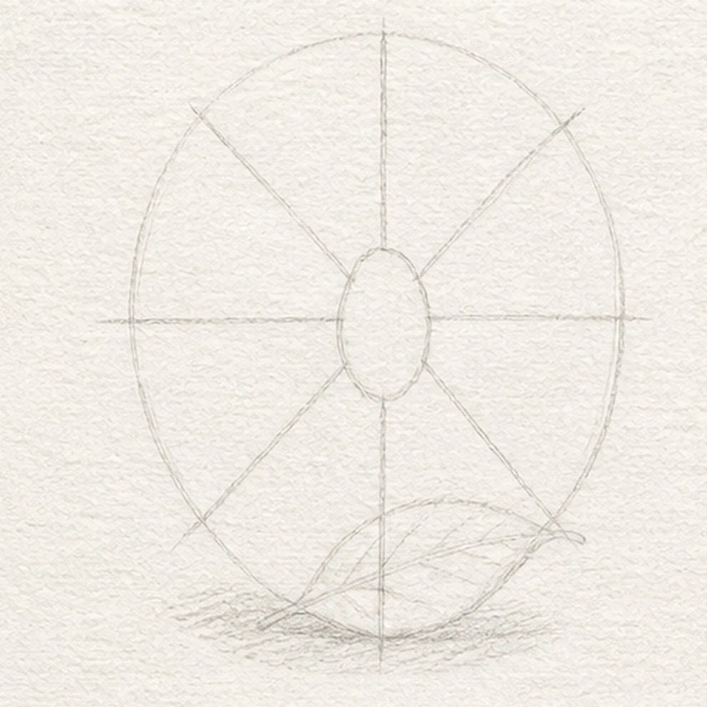
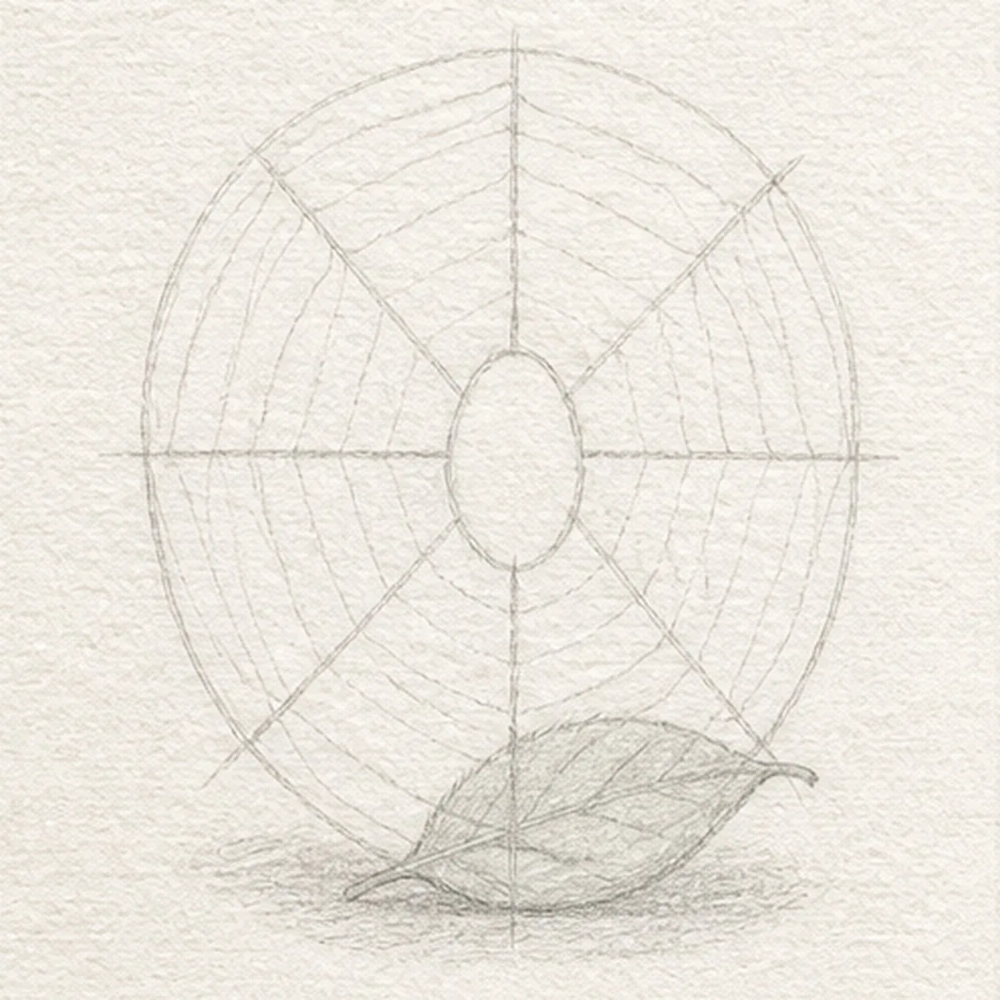
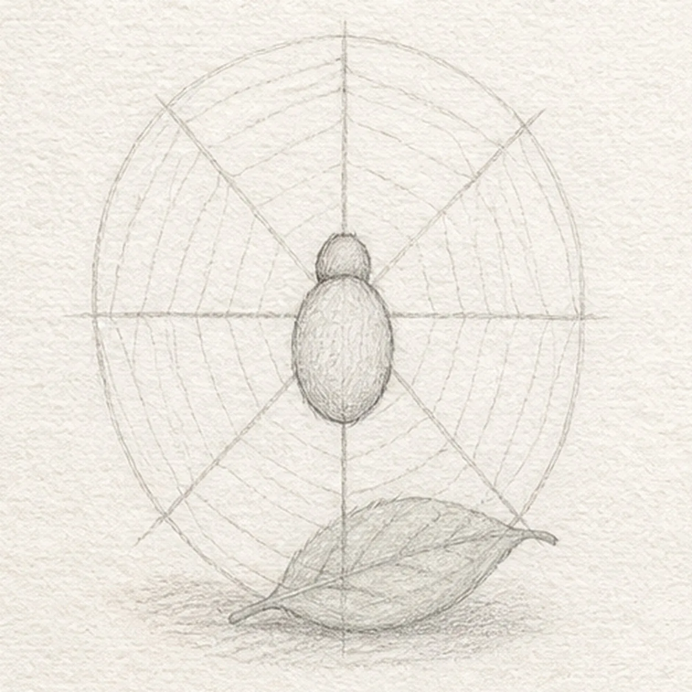
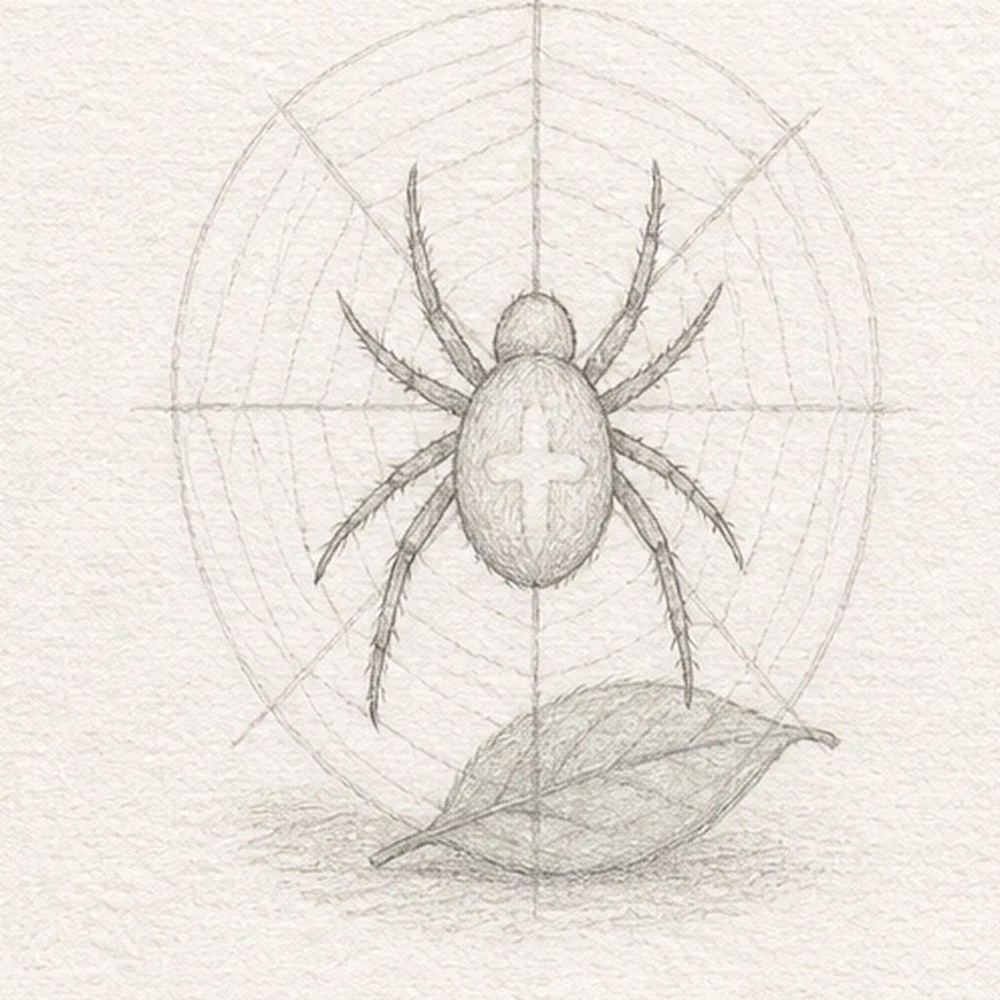
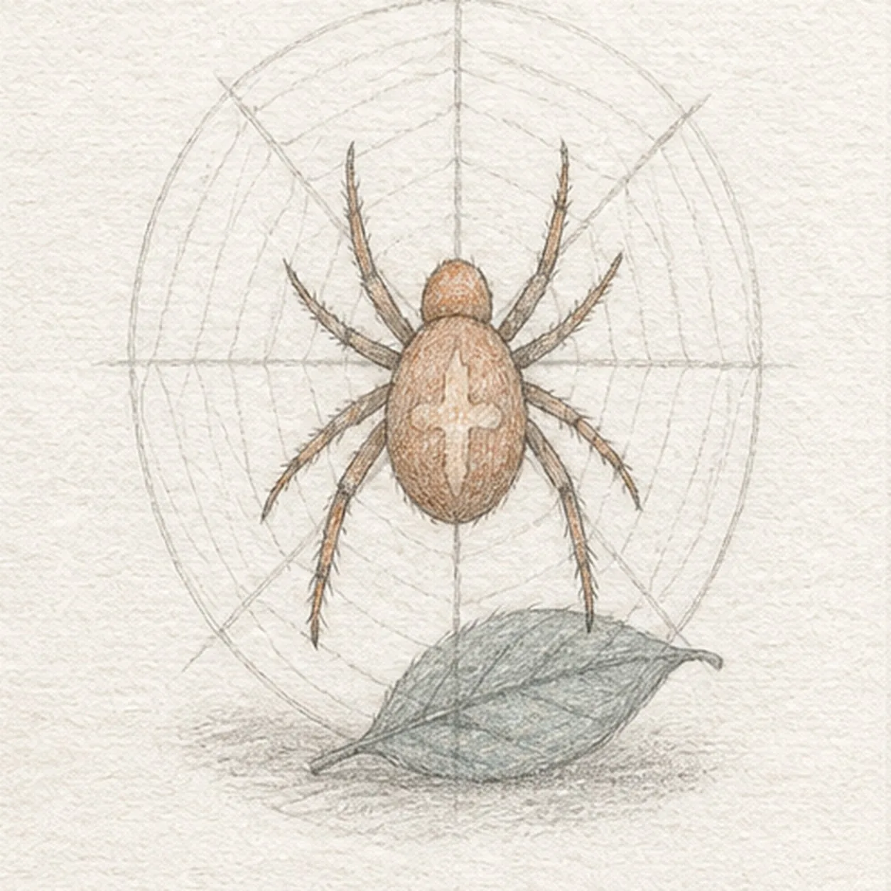

From the archive
Let's draw a garden spider on a web
Treat this as one small practice round: build the subject lightly, notice the shapes, then darken only the lines that help the finished sketch.
-
01

Map the web and body
Use pale HB to place one oval web envelope, exactly eight spoke routes, a central spider-body reserve, one leaf reserve, and a soft shadow footprint.
Sketch tip: Count the eight spokes before you connect them. Leave the body oval open so web lines will not run through the spider later.
-
02

Spin the web
Connect the established spokes with one loose outer spiral, then draw the one small leaf at the lower web edge.
Sketch tip: Keep the spiral uneven and light like real thread. Stop it cleanly at the reserved body and leaf footprints.
-
03

Build the spider
Draw the same small head and oval abdomen on the central reserve.
Sketch tip: Keep the head smaller than the abdomen and center both shapes over the web intersection.
-
04

Bend eight legs
Add exactly eight bent legs and the established pale cross marking on the abdomen.
Sketch tip: Work around the body in pairs. Each leg only needs two or three relaxed graphite bends to read clearly.
-
05

Set pencil value
Add graphite texture, muted rust body color, gray-green leaf tint, and the soft shadow over only the forms already in place.
Sketch tip: Use light strokes that follow the abdomen curve. Let the web stay paler than the spider so the tiny body remains readable.
-
06

Finish the tiny weaver
Clarify only the established keeper contours, web threads, spider texture, restrained color, and shadow.
Sketch tip: Count one spider, eight legs, eight spokes, and one leaf before stopping. Do not add a second bug or background scene the earlier steps did not build.